ここでは、HD.version.SDKをさわる前段階として、Visual Studioのインストール時の留意点が記載されています。
Visual C++ をインストールしていない人は、この段階で、Visual C++ をインストールすること。
HD.version.SDKのコンパイルは、Visual Studio 2015 ～ Visual Studio 2022 で可能です。
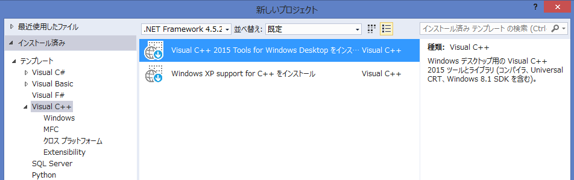
インストール後、HD.version.SDKの.slnを起動し、プラットフォームツールセットとして Visual Studio 2015 を選択しましょう。
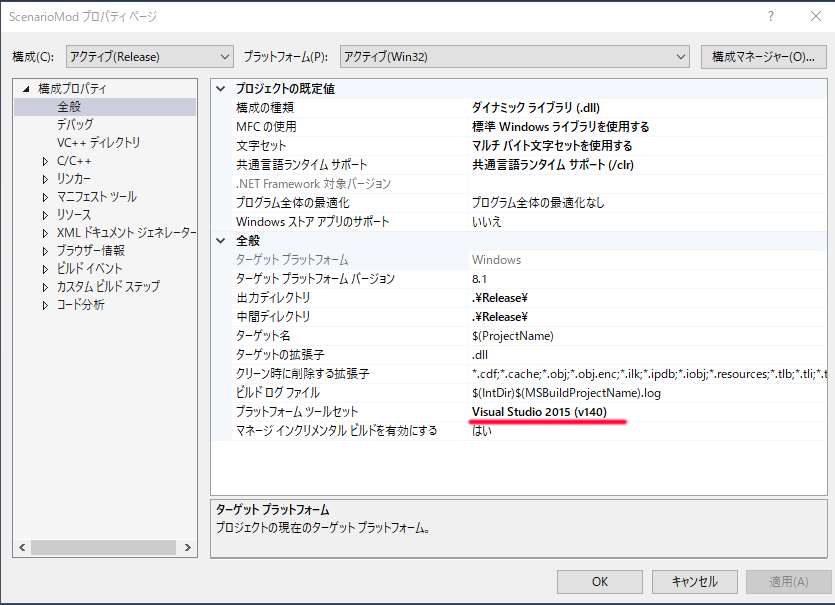
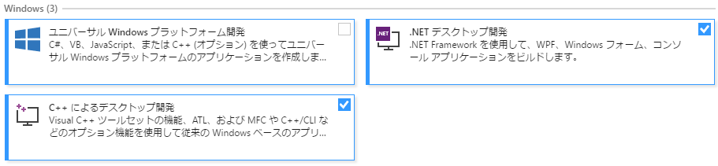
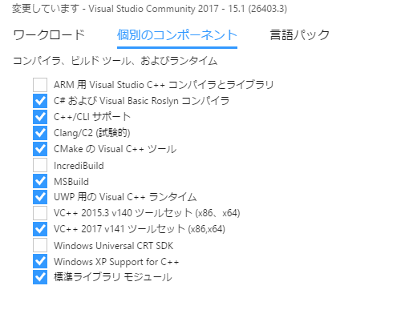
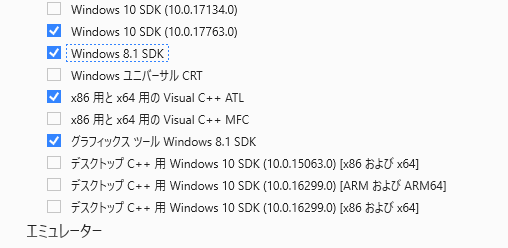
インストール後、HD.version.SDKの.slnを起動し、プラットフォームツールセットとして Visual Studio 2017 を選択しましょう。
Windows SDK は 迷うのであれば、8.1を指定してください。
Windows 10 SDKを利用する場合、「10.0.17763.0」以下である必要があります。
このバージョンより「大きな」バージョンのWindows 10 SDKではコンパイルできません。
(アライメントオプションの/Zp1が邪魔をしているが、このオプションはHD.version.SDKでは必須)
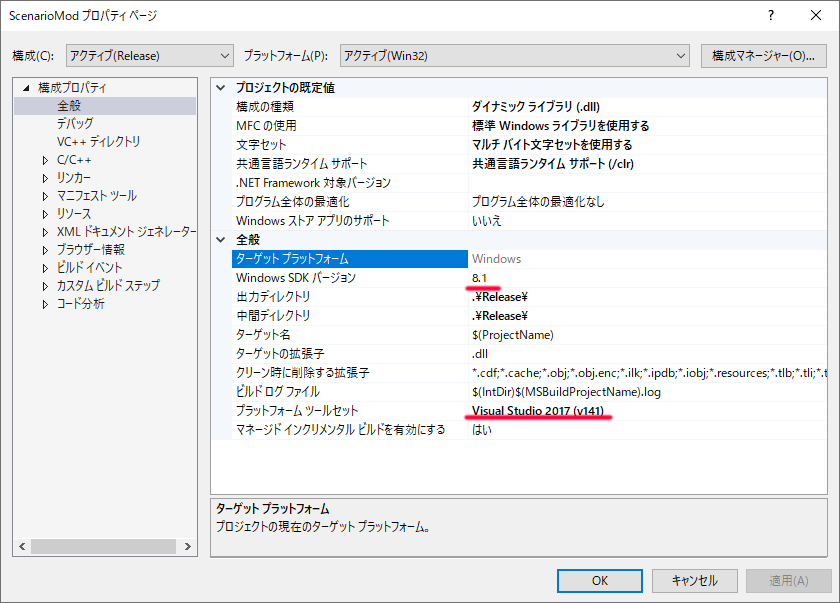
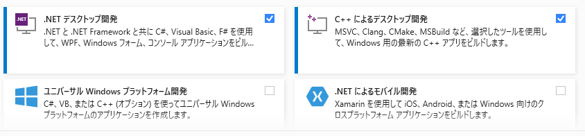
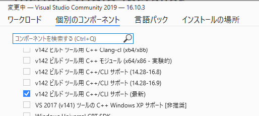
インストール後、HD.version.SDKの.slnを起動し、プラットフォームツールセットとして Visual Studio 2019 を選択しましょう。
ターゲットプラットフォームには、「10.0.17763.0」を選択するのが良いでしょう。
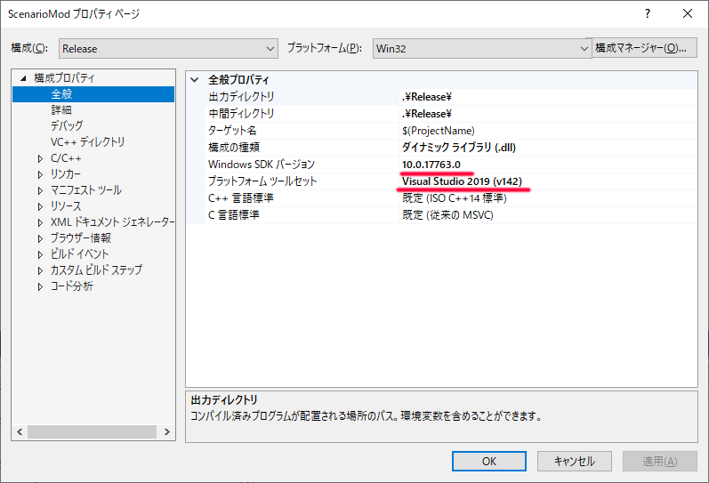
これより新しい「10.0.19041.0」などを選択すると、コンパイルできないので注意。
(アライメントオプションの/Zp1が邪魔をしているが、このオプションはHD.version.SDKでは必須)
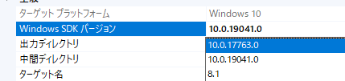
インストール後、HD.version.SDKの.slnを起動し、プラットフォームツールセットとして Visual Studio 2022 を選択しましょう。
ターゲットプラットフォームには、「10.0.17763.0」を選択してください。
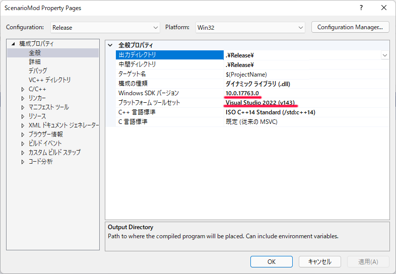
これより新しい「10.0.19041.0」などを選択すると、コンパイルできないので注意。
(アライメントオプションの/Zp1が邪魔をしているが、このオプションはHD.version.SDKでは必須)